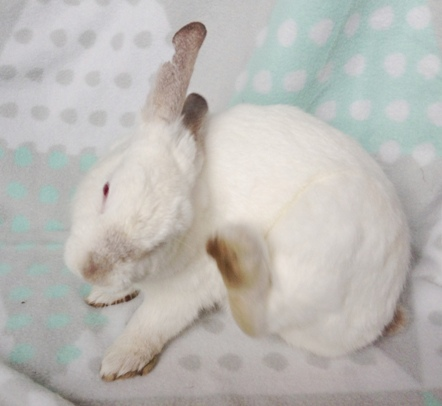

Care Guide
Diet
Rabbits need unlimited access to grass and/or grass hay. They are fibrevores, which means first and foremost, they need fiber. Therefore the most essential part of any rabbit’s diet is grass and hay.
Water:
Rabbits need access to clean drinking water 24/7. Depending on your rabbit’s preference, this can be in a heavy bowl (they tend to tip over plastic bowls), a licker bottle, or both. You should clean out and change your bunny's water container regularly.
-600.jpg)
Hay:
Hay provides long-strand fiber, which is essential for a rabbit’s gut as well as helping to keep their teeth in order. Rabbit’s teeth grow continuously throughout their life and they need to eat fibrous foods in order to keep their teeth worn down. Rabbits that don’t eat enough hay develop painful spurs on their teeth which, if left untreated, will make it painful for them to eat. They may even stop eating which, in a rabbit, is fatal.

Rabbits will naturally graze all day long so they should always have access to fresh, good quality hay. You can purchase hay from local farm stores such as Rural Trading Post and Sharpes. You can also find a variety of hay at pet stores.
Grass:
The fibrous content of grass keeps a Rabbit’s gut mobile. The action of nibbling on grass is also good for their teeth.
Vegetables:
Rabbits love green vegetables and a good guide is about a cup of fresh vegetables per day. Leafy greens are best, including kale, broccoli (including broccoli) stalks and leaves, silverbeet and other beet leaves, celery, spinach and herbs such as parsley and coriander. Rabbits also love carrot tops, though the carrot itself should be fed in moderation as it has a high sugar content - too much is not good for your rabbit. Please be aware that any vegetables that are high in water content are not great for your rabbit. Iceberg lettuce in particular should be avoided. If you do feed your bunny lettuce, ensure it’s a small amount and that your rabbit has access to plenty of fibrous food such as hay.
-600.jpg)
Fruit:
Rabbits naturally have a very sweet tooth and fruit is a great way to give them a treat. About 1-2 tablespoons of fruit a day is recommended. Rabbits love bananas, apples, grapes, mango and pears. Dried fruits are also great treats, for example raisins, dried pineapple, dried apricots and dates, but be aware that a dried fruit is much smaller than the same fruit before it is dried, so it can be easy to feed too much by accident. Remove the pips from all fruit where possible.
Rabbit Pellets:
The general rule with rabbit food is that the plainer it is the better. Avoid muesli style food and opt for a plain, high fiber pellet. The best rabbit pellet brands available in NZ are Oxbow and Burgess Excel. If you are buying from a farm store then the best brand is NRM.
Forage:
Several common garden plants are safe for rabbits to eat and they are generally good at knowing what they can and can’t eat. However, please only feed plants that you know are not poisonous to your rabbit and ensure the plants have not been sprayed with weedkillers or pesticides. As with any new food, add it in gradually to your rabbits diet and keep an eye out for any changes in your rabbit’s poo. If your rabbit has diarrhea contact a rabbit savvy vet immediately - any digestive problem in a rabbit should be considered an emergency.
Branches are great for rabbits to chew on and again this is good for their teeth. Try willow, rose, or taupata as well as fruit branches such as apple, pear, or hawthorne. As a general rule, avoid branches from fuits with a single seed (plum, cherry, apricot, peach etc) as these are usually poisonous to rabbits. Flax is good for bunnies to chew on and will help keep them occupied.

Caecotrophs:
As part of their normal diet rabbits eat a particular kind of their own droppings called Caecotrophs. They need to do this as they cannot extract all the vital fiber and nutrients they need first time around. The bacteria from their first pass also provides them with protein and B vitamins. Unlike the normal dry droppings you often see, caecotrophs are shiny, sticky and smelly. Rabbits eat these directly from the anus so you shouldn’t see them often. To see them occasionally is normal but regular sightings may mean that your rabbit’s diet is either too rich or they are having problems eating, possibly due to obesity, large dewlaps, or dental problems. You should contact a rabbit savvy vet if you have any concerns.
Housing
When it comes to housing your rabbit the general rule is the more space the better. Rabbits need lots of exercise!
WRR has a minimum space requirement of 1m wide x 1m high x 2m long – this should include a warm dry ‘bed’ space of at least 61cm x 61cm
Most hutches available on the market are too small to be the only place for rabbits to live in.

Most hutches available on the market are too small to be the only place for rabbits to live in. They can easily be adapted by permanently attaching runs or pens, and can be made more secure by adding a roof. If you have a secure property then you could roof your pens with something as simple as bird netting or chicken mesh. If you feel predators could be an issue then you should use weldmesh. Areas of your home and garden can also be made rabbit-proof so your bunnies can live free range. Feel free to message us for suggestions and advice!
Rabbits are very tidy creatures and can be litter trained. You can use a cat litter tray (I find this works best) or the corner litter trays designed for rabbits. You can use many different things for litter – the best type of litter is recycled newspaper litter. A good idea is to line the tray with newspaper, put down the recycled newspaper litter and then put straw over top.
Litter training is SUPER easy! Every time they poop just scoop it up and place it in the litter tray until your bunny gets the idea. If you find they aren’t choosing to pee in their litter tray then if you place a tissue in their pee and then place it under the straw in the litter tray this will help them know where to go.
If you are planning on having indoor, litter trained rabbits then you need to “rabbit proof” your house. Rabbits love to chew cords – whether they are plugged in or not! To save your bunny (and your wallet) getting shocked, we recommend having any cords tied up and well out of bunny's reach!
Enrichment
Rabbits are highly intelligent and are often misunderstood due to their quiet nature. They need lots of stimulation to prevent them from getting bored. These don’t need to be expensive toys.
A great bunny toy is a simple cardboard box - just cut two door holes and they will happily explore and enjoy “renovating” their box to their liking. A cardboard tube/empty toilet roll or egg box stuffed with hay and a few raisins makes a great toy, as do fabric tunnels. They also love digging and jumping so fill a box with soil or try giving them a sandpit.
Socialisation/Rabbit Bonding
Rabbits are very social animals and thrive with the company of their own kind. In the wild they live in large colonies and this social side of their nature is still very evident in the domestic rabbit. At WRR we don’t believe any rabbit should live alone. This is partly for their mental health - they need interaction and a friend for company, but also for their physical wellbeing. Rabbits are very clean animals and will groom each other. This is also a sign of affection between rabbits.
-600.jpg)
Rabbits are very social animals and thrive with the company of their own kind. In the wild they live in large colonies and this social side of their nature is still very evident in the domestic rabbit. At WRR we don’t believe any rabbit should live alone. This is partly for their mental health - they need interaction and a friend for company, but also for their physical wellbeing. Rabbits are very clean animals and will groom each other. This is also a sign of affection between rabbits.
Young rabbits housed together will often begin to fight when they reach sexual maturity, around 3 - 6 months of age. If the fighting leads to biting or any skin injury then they need to be separated until they are desexed.

WRR help to ‘bond’ rabbits. Bonding involves introducing rabbits on neutral territory where neither rabbit has been before, for short periods of time depending on how they get along. For more information on bonding two rabbits please contact us.
The Rabbit Human Relationship
Rabbits are prey animals and, contrary to popular belief, most do not like being picked up. This is because, to a rabbit, being picked up off the ground is similar to being caught by a predator.
Rabbits do, however, like receiving attention with all four legs on the ground. They love having their heads and ears stroked and many enjoy having their cheeks rubbed.

You will often need to earn a rabbit’s trust before handling them. A good way to let your rabbit know that you aren’t a threat is to just spend time with it. Get down to their level and sit or lie down in their pen; allow them to come to you in their own time. This may take a while but it’s worth being patient. Rabbits love treats like dried fruit so try hand feeding them one or two morsels when you sit with them. They will soon start to associate you with treats and before too long will run up to you and allow you to pat them.
Desexing
ALL rabbits should be desexed and vaccinated. Here are a few good reasons why:
-
There are too many unwanted rabbits in animal shelters all
over the New Zealand. Unfortunately a huge number of healthy
rabbits are euthanised each day because there are not enough
homes or spaces in shelters for them. Desexing your rabbit
means preventing more animals suffering this fate.
(WRR never euthanises rabbits unless they are too sick or injured to survive and it is in their best interest. This decision is never taken lightly.) - Rabbits breed... well, like rabbits. A female rabbit can have up to 10 babies per litter and can get pregnant again as soon as she has given birth. That's up to 80 babies in her first year of life! Not only is that a lot of rabbits, back-to-back pregnancies can take a terrible toll on mum-rabbit. It is very important to desex your female rabbit even if she is not housed with a male as accidents can still happen. For example - we have many cases where unspeyed female rabbits become pregnant to wild male rabbits. Wild rabbits can break into a female rabbit’s cage or if the female is feeling very hormonal she may even break or dig her way out!
- Desexing your rabbit also prevents health problems in the future - female rabbits, for example, are extremely prone to uterine cancer, which is fatal.
- Rabbits are very hormonal creatures and being entire (not desexed) can cause them mental stress. They are likely to pace, spray, dig and just be generally destructive. Desexing your rabbit helps relax their temperament. It also helps prevent female rabbits from having ‘false pregnancies’ which are very, very common. A false pregnancy can drive a rabbit to pull out her fur, make a nest and even produce milk which is all very stressful on a her body. This can happen even if you have NO male rabbits around.
- Desexed rabbits are also a lot easier to bond. They are less territorial and enjoy the company of other rabbits without the hormonal stress.
Rabbit Health
Rabbits are quite fragile creatures and, as prey animals, they hide pain and injury well. They do this so that predators will not see them as an easy target. Unfortunately, this means that by the time your rabbit shows outward signs of illness it could be very serious. If you see any sign of illness in your rabbit, take them to a rabbit-savvy vet right away.
Here are some common problems rabbits in New Zealand face:
Gut Stasis:
If your rabbit stops eating or appears to be off its food, it is imperative you keep a very close eye on them. If a rabbit stops eating then their gut may go into stasis and this can be fatal within just 24hrs. If you put down their favourite food and they turn their nose up at it, take them straight to a rabbit savvy vet.
RHD/Calici virus:
Rabbit haemorrhagic disease, RHD, RCD, VHD, Calici & Calicivirus...
It is known by many names, but it is the one thing that has bunny owners shaking in their boots.
SO what exactly is this disease, and what can we do about it? There is a lot of misinformation out there, and we plan to make things very clear for all you bunny lovers out there!
The first thing you need to know is: There are THREE strains of RHD in New Zealand. RHDV1 was illegally released in 1997, RHDV1-K5 was legally released in 2018, and RHDV2 was discovered in May 2018 - this was NOT a planned release - likely it was brought in illegally, or accidentally.
How can we protect our rabbits?
RHDV1 & RHDV1-K5: VACCINATE. It's very important you vaccinate your rabbits with CYLAP to protect your rabbit from the original calicivirus, and the Korean strain. Your rabbits will need an annual vaccination. Keep in mind no vaccination is 100% effective and we suggest still taking precautions as listed below. Vaccinating is still your rabbits BEST chance for survival.
RHDV2: This strain is much more of a concern for us. There is currently NO vaccine in the country. There has only been one rabbit (wild) confirmed to have contracted RHDV2 in New Zealand so far, this was in Marlborough. Until we can get a vaccine for this disease into the country - here are some ways you can protect your rabbit from infection.
- Control insects (especially flies and fleas) as much as possible both indoors and outdoors. Flies are the main carrier through which the virus is spread.
- Remove uneaten food on a daily basis.
- Rabbit-proof your backyard to prevent access by wild rabbits. Bring your rabbits indoors where possible.
- Regularly decontaminate equipment and materials (e.g. cages, hutches, bowls) with either 10% bleach or 10% sodium hydroxide. Leave on the surfaces for 10mins and then rinse off.
- Wash your hands, clothing and shoes after handling other people’s rabbits.
- Avoid cutting grass and feeding it to your rabbits if there is the risk of contamination from wild rabbits. This includes picking forage from the ground - I know a lot of us do this! You are much better off growing your own food from seed.
If you think your rabbit may have calici (any of the three strains) please call your vet immediately. Unfortunately it is very rare for an unvaccinated rabbit to survive calici, but your rabbit will require pain relief and fluids if you have caught it early, or euthanasia if there is no chance of survival. You must prevent your rabbit from suffering, it is a horrendously painful disease - your vet (choose a rabbit savvy vet where possible) will be able to advise you once you speak to them and your rabbit has been examined.
IF your rabbit dies and you are unsure how, PLEASE contact your nearest vet or MPI so a post mortem can be organised. It's important we are able to track the spread of this disease.
I hope this post helps to clarify things for you all. There is a lot of confusion between RHDV1-k5, and RHDV2 at the moment!
Coccidiosis:
Coccidiosis is caused by a type of parasite called a coccidian protozoa. This parasite is widespread and can be found throughout New Zealand.
Rabbits are most at risk during their first nine months of life. Older rabbits appear to be more resistant to infections, but a rabbit who is weak or immunocompromised by still be in danger.
Most rabbits carry small numbers of coccidia in their digestive system. This is normal, but in some cases these parasite can overwhelm the immune system and build up to high numbers. This can cause illness and, in severe cases, death.
Signs your rabbit may have coccidiosis:
- Diarrhoea (or runny poos)
- Weight loss
- Lack of appetite
- Lethargy
If your rabbit is showing any of the above signs please take them to a rabbit savvy vet immediately.
Treatment:
There are many different products available to treat coccidia. We have found baycox to be the most effective treatment in cases we have seen. Your local vet can prescribe this for you. Due to the life cycle of the parasite, Baycox should be given at a rate of 2.5 to 5mg/kg for two consecutive days, then wait five days and repeat the treatment.
Almost all animal species have their own, species-specific form of coccidia parasite. Rabbit coccidia only affects rabbits and is not infectious for humans or other non-rabbit pets.
Dental Health:
A rabbit’s teeth grow continuously throughout its life and it is vital that they eat high-fibre food to wear these down. A rabbit with overgrown teeth will have difficulty eating and may develop other problems as a result. Sometimes a rabbit’s teeth can also develop spurs which cut into their mouth. This can be very painful and deter them from eating.
A very common dental problem for rabbits is malocclusion. This means their teeth do not meet, and therefore do not wear down the way they should. If your rabbit is exhibiting any of the following signs please get your rabbit to a vet ASAP:
- Weepy Eyes
- Lack of appetite
- Wet chin/Dribbling
- Swelling around the face/mouth
Flystrike:
Rabbits with runny poos/diarrhoea or injuries (infected wounds in particular) can be prone to flystrike, particularly in summer. Flystrike occurs when the fly lays its eggs in the poo around the rabbit’s bottom or near/in the any wounds your rabbit might have. The eggs then hatch into maggots which burrow into and eat the skin of the rabbit, causing severe pain and often death from shock. Flystrike rarely if ever affects healthy rabbits. It is VERY important to keep your rabbit clean if it has diarrhoea. You can do this by clipping the rabbit’s fur around their bottom and keeping the area clean.
Please DO NOT bath your rabbit and check with your rabbit savvy vet if you wish to use shampoo to clean your rabbit’s bottom. We only use Whoop Itch and Ouch shampoo on rabbits here at WRR and only when the situation is dire! Rabbits cannot regulate their body temperature well and when bathing a rabbit the water penetrates right through the fur; unlike rain, which runs off their fur and doesn’t go through to the skin. It is important to check your rabbit for flystrike in the summer months. If your rabbit has any signs of flystrike take it straight to a rabbit savvy vet!
Heatstroke:
Rabbits do not cope well in the heat and need a helping hand in the summer months. Always ensure your rabbit has shade and plenty of water. A good idea is to wet towels and hang them as shade cloths - the moisture in the towels helps to cool the air. A good trick is to freeze water bottles and then place them in your rabbit’s hutch or run for them to lie next to on hot days, you can wrap the bottle in a tea towel.
A fun way to keep your rabbit cool and give them enrichment at the same time is to freeze pieces of fresh fruit with water in ice cube trays - popsicles for bunnies!. Don't forget to include this in your bunny's fruit allowance for the day. If you rabbit is indoors, ensure the curtains are pulled to give them shade and consider using a fan to keep the air flowing and cool.
Pastuerella/Rabbit Snuffles:
All rabbits carry a bacteria in their respiratory tract called Pastuerella. Some rabbits are more susceptible to the symptoms of this bacteria and some only develop symptoms in times of stress or ill health.
Pastuerella can cause your rabbit to have cold like symptoms. Some rabbits get over this quite quickly on their own, but sometimes it can develop quickly into a more serious or recurring illness of the respiratory tract. If you notice your rabbit is sneezing, look out for it producing any mucus from the nose or eyes. Rabbits often use their front paws to wipe their faces so if you see mucus on their front feet this is a tell-tale sign.
Take your bunny to see a rabbit savvy vet if your rabbit has mucus, appears lethargic or, as with all other rabbit illnesses, if they stop eating or using the toilet.
Fleas and Mites:
Rabbit’s aren’t as prone to getting fleas as a dog or cat, but mites are very common, particularly during the Spring/Summer months. You can treat your rabbit with Revolution Small Animal for both fleas and mites. Please talk to your vet about the dose rate before giving your rabbit Revolution as some smaller breeds of rabbit may not need the full packet. Guinea pig mites can also be treated with this product.